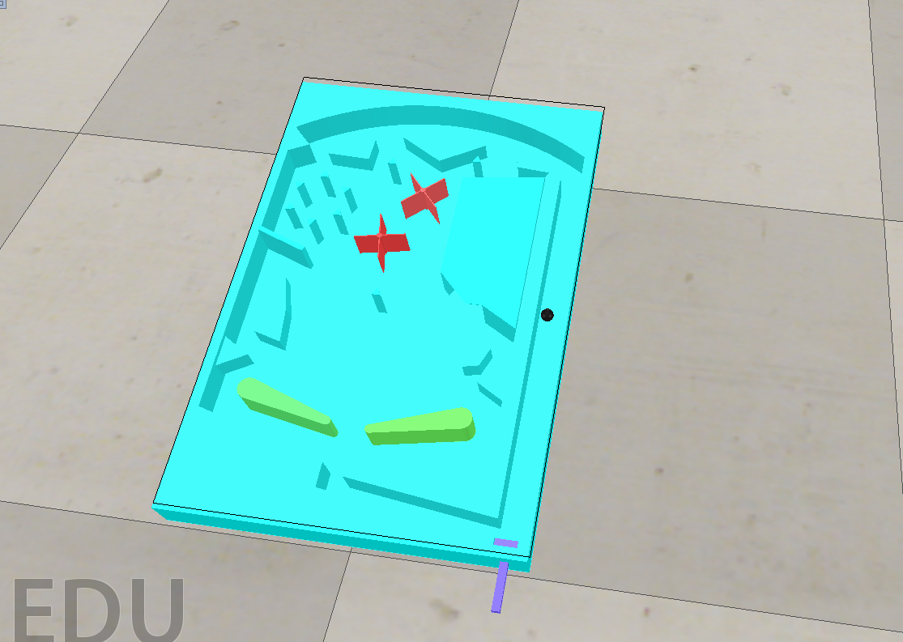

期末任務 << Previous
Pinball Machine V-rep Simulator
ttt檔案：https://github.com/40423136/2019cp/blob/master/40423136.ttt
按下a鍵左邊揮擊
按下l鍵右邊揮擊
按↑會擊球
程式碼：
function sysCall_init()
R1= sim.getObjectHandle('R1')
L1= sim.getObjectHandle('L1')
Hit= sim.getObjectHandle('Hit')
Ball= sim.getObjectHandle('Ball')
HIT= sim.getObjectHandle('HIT')
R1B= sim.getObjectHandle('r11')
L1B= sim.getObjectHandle('l11')
Kick_v_1=0
Kick_v_2=0
dVel=0.5
HIT_v=0
end
function sysCall_actuation()
Ball_s = sim.getObjectPosition(Ball,-1)
message,auxiliaryData=sim.getSimulatorMessage()
while message~=-1 do
if (message==sim.message_keypress) then
if(auxiliaryData[1]==97) then
Kick_v_2 = Kick_v_2 + dVel*10
end
if(auxiliaryData[1]==108) then
Kick_v_1 = Kick_v_1 - dVel*10
end
if(auxiliaryData[1]==2007) then
HIT_v = HIT_v + dVel*3
end
end
message,auxiliaryData=sim.getSimulatorMessage()
end
sim.setJointTargetVelocity(Hit,HIT_v)
sim.setJointTargetVelocity(R1,Kick_v_1)
sim.setJointTargetVelocity(L1,Kick_v_2)
HIT_s = sim.getObjectPosition(HIT,-1)
R1B_s = sim.getObjectPosition(R1B,-1)
L1B_s = sim.getObjectPosition(L1B,-1)
if HIT_s[2] >= 0.213988 and HIT_s[3] >= 0.113451 then
HIT_v = HIT_v - dVel*3
end
if R1B_s[3] >= 0.095 then
Kick_v_1 = Kick_v_1 + dVel*10
end
if L1B_s[3] >= 0.096 then
Kick_v_2 = Kick_v_2 - dVel*10
end
end

組員繪製圖檔位置 : https://github.com/mdekmol/cd2019a-task1-2019cda_t1_g2/issues/3
↑↑↑ 個人繪製的部分是偏紫色的幾何
期末任務 << Previous